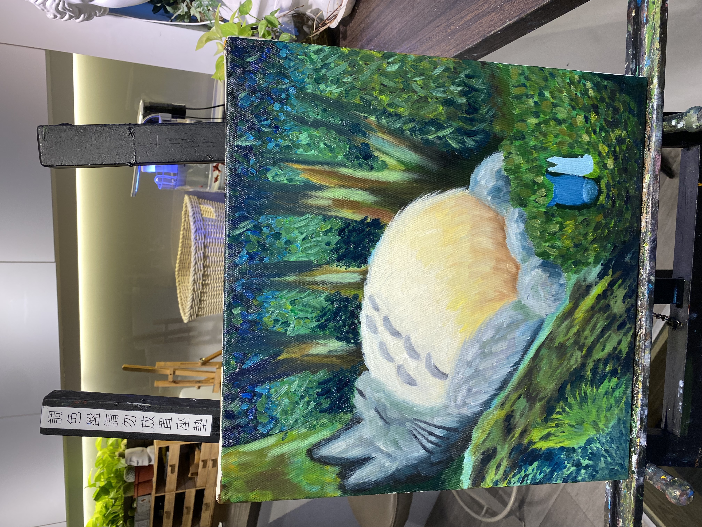

彩羽之眠
以鮮明的色彩描繪出鳥兒寧靜的姿態，背景以綠色調的筆觸營造自然氛圍。鳥兒的身體採用暖橙、亮黃和深藍漸層，展現色彩間的自然過渡，整體給人和諧與柔和的感受。這幅畫透過豐富的色彩表達大自然的靜謐與美好。
2023年1月

森語夢境
描繪了豆豆龍在森林中寧靜入睡的場景，充滿童趣與自然的和諧感。背景以豐富的綠色層次呈現茂密的樹木和植被，營造出森林的深邃與生機。豆豆龍的身體以柔和的灰色和暖橙色描繪，展現出溫暖、安詳的氛圍。
2023年1月
鳳舞焰歌
以鮮烈的紅橙色調描繪出鳳凰展翅的瞬間，充滿力量與生命力。背景以明亮的黃色和橙色筆觸，營造出火焰般的動態感，讓整體畫面充滿熱情與能量。鳳凰的羽翼流暢而有力，象徵著重生與不滅的精神。這幅畫透過強烈的色彩對比，表現出鳳凰浴火而生的壯麗之美。
2023年1月